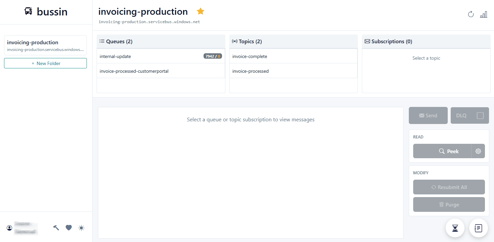
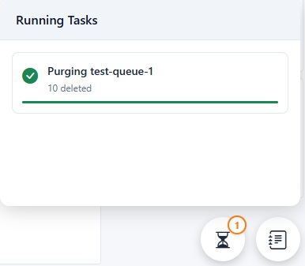
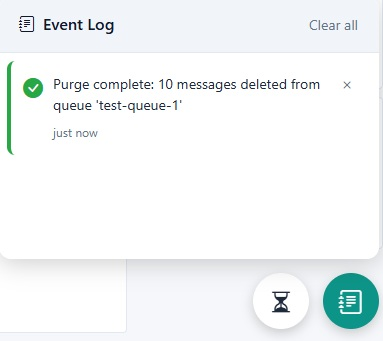

Mastering Background Tasks: High-Performance Operations
How Bussin uses background workers to handle massive Service Bus operations like purging and searching without locking your UI.
When handling thousands or millions of messages in Azure Service Bus, synchronous operations are a disaster. They lock your browser and provide zero feedback. Bussin solves this with a robust background task system.
Why Background Tasks?
Blazor WebAssembly runs in a single-threaded environment (the browser's UI thread). If you try to delete 1,000,000 messages in a single loop, your browser will freeze, and your users will see a 'Page Unresponsive' error. Bussin offloads these long-running operations to a background worker system that keeps the UI smooth.
Purging at Scale
Need to clear a dead-letter queue with 500,000 messages? In most tools, this is a slow, manual process. In Bussin, you hit Purge, confirm the operation, and then carry on with your other work.

Once started, the task appears in the bottom-left corner of your screen. You can see exactly how many messages have been cleared in real-time.

The Event Log
Every background task reports its progress and eventual success or failure to the Event Log. This acts as your audit trail for what happened in your namespace during a debugging session.
